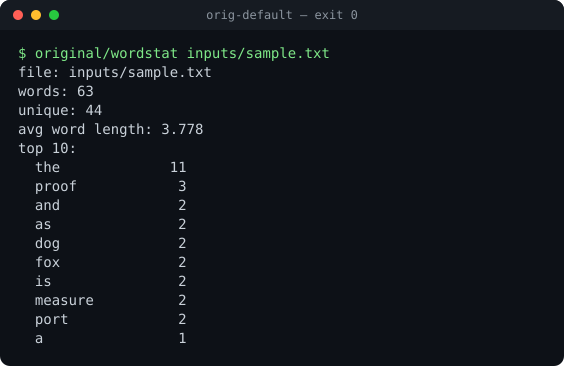
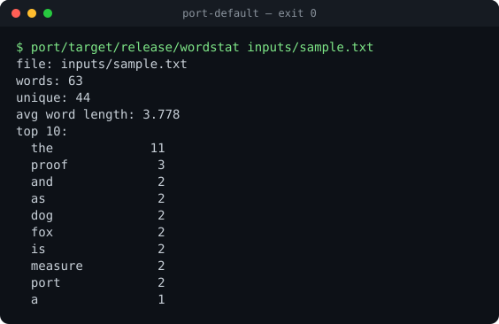
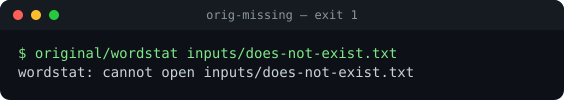
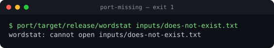
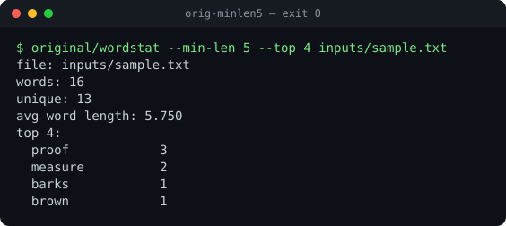

Rust port documented with evidence. 9 observations · 1 inference · 1 open unknown · 6 screenshots. Source ↗
Port plan
PORT.md — wordstat (C → Rust)
A deliberately small port that exercises the whole PortCode workflow on a real original: pin, golden harness, differential fuzz, parity, screenshots and the generated site. Every claim cites an evidence id from the ledger below (E-xxxx).
1. Source
Origin: original/wordstat.c (C, 83 LOC, written for this example, MIT). Pinned build: see E-0001 (sha256 of original/wordstat, compiled with cc -O2 -Wall).
In scope: argument parsing (--top, --min-len, file), word counting, sorting, report format, error paths.
Dropped: none. Known non-goal: non-C locales (E-0011).
3. Module map
Source
LOC
Rust
Strategy
Evidence
Status
main arg loop
15
wordstat_core::run
rewrite
E-0002, E-0006
done
tokenizer + counting
25
wordstat_core::count
rewrite
E-0004, E-0010
done
qsort(cmp) + report
15
wordstat_core::run
rewrite (sort_by count desc, word asc)
E-0002
done
atoi
libc
wordstat_core::atoi
rewrite (saturating)
E-0009
done
4. Dependency map
Source dep
Rust replacement
Why / risk
libc isalnum/tolower
u8::is_ascii_alphanumeric/to_ascii_lowercase
identical in the C locale; see E-0011
printf("%.3f")
format!("{:.3}")
both round the exact binary value; checked by fuzz
5. Hard problems
Problem
Approach
Alternatives
Original quirks (negative --top, value-less flag becomes the path, 255-byte word cap)
reproduce, unit-test each
"fix" them — rejected, fidelity goal is bit-exact
6. Golden cases (tests/golden/*.txt, produced by tests/run_cases.sh original/wordstat)
Case
Command
Evidence
Port status
default
wordstat inputs/sample.txt
E-0002 / E-0003
PASS
top3
--top 3
E-0008
PASS
minlen5
--min-len 5 --top 4
E-0004 / E-0005
PASS
empty
empty file
E-0008
PASS
missing
nonexistent file → stderr, exit 1
E-0006 / E-0007
PASS
usage
no args → usage, exit 2
E-0008
PASS
7. Milestones
☑ M0 original builds; golden harness captures 6 cases
☑ M1 core ported, headless goldens green (E-0008)
☑ M2 real-content slice: the shipped binary runs on real files
☑ M3 parity: 6/6 goldens + 400/400 fuzz (E-0008, E-0009); screenshots attached to every feature
☑ M4 cargo clippy -D warnings clean, site generated
8. Open unknowns
E-0011: behaviour under non-C locales (isalnum on bytes ≥ 128).
9. Decision log
Quirks of the original are kept rather than fixed (bit-exact goal).
Core is a pure function over (args, read) so goldens run without touching the filesystem.
Evidence by feature
cli.default
observationE-0002High
original: report for inputs/sample.txt (exit 0)
sha256 219ec2e9f812f9cb
via screenshot original/wordstat inputs/sample.txt

E-0002 — screenshots/orig-default.svg
observationE-0003High
port: identical report for inputs/sample.txt (exit 0)
sha256 219ec2e9f812f9cb
via screenshot port/target/release/wordstat inputs/sample.txt

E-0003 — screenshots/port-default.svg
cli.errors
observationE-0006High
original: missing file -> stderr message, exit 1
sha256 cf0f0634eda459c4
via screenshot original/wordstat inputs/does-not-exist.txt

E-0006 — screenshots/orig-missing.svg
observationE-0007High
port: same stderr message and exit code 1
sha256 cf0f0634eda459c4
via screenshot port/target/release/wordstat inputs/does-not-exist.txt

E-0007 — screenshots/port-missing.svg
cli.locale
unknownE-0011Low
The original calls isalnum()/tolower(), which are locale-dependent for bytes >= 128; all goldens were captured in the C locale. The port assumes ASCII only.
via read original/wordstat.c
cli.options
observationE-0004High
original: --min-len 5 --top 4
sha256 40036497b5dcbcba
via screenshot original/wordstat --min-len 5 --top 4 inputs/sample.txt

E-0004 — screenshots/orig-minlen5.svg
observationE-0005High
port: identical output for --min-len 5 --top 4
sha256 40036497b5dcbcba
via screenshot port/target/release/wordstat --min-len 5 --top 4 inputs/sample.txt
E-0005 — screenshots/port-minlen5.svg
inferenceE-0010Medium
A word is kept to at most 255 bytes (char buf[256], wordstat.c:31); longer runs still count once. Read from source; the fuzz includes 250-300 byte words and agrees.
via read original/wordstat.c
original.build
observationE-0001High
original/wordstat is Mach-O (34232 bytes), sha256 ec3f59ff898efa2dbd2af59a7a75322219423368fb9d251f52394089017acf63, version 1.0
sha256 ec3f59ff898efa2d
via pin
parity.fuzz
observationE-0009High
differential fuzz: 400/400 identical (stdout, stderr and exit code byte-identical)
via tests/fuzz.py 400 random files, seed 1234, NUL/0xFF bytes, 250-300 byte words, odd flags
via portcode port parity tests/golden /tmp/ws_port_out
Open unknowns
unknownE-0011Low
The original calls isalnum()/tolower(), which are locale-dependent for bytes >= 128; all goldens were captured in the C locale. The port assumes ASCII only.